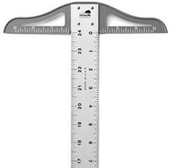
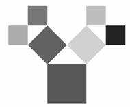
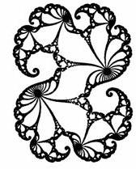
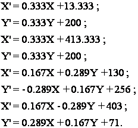

Поняття фрактал і фрактальна геометрія, що з’явилися в кінці 70-х, із середини 80-х міцно увійшли до ужитку математиків і програмістів. Слово фрактал утворено від латинського “fractus”, що в перекладі означає “той, що складається з фрагментів”. Воно було запропоноване Бенуа Мандельбротом у 1975 році для позначення нерегулярних, але самоподібних структур, якими він займався. Народження фрактальної геометрії прийнято пов’язувати з виходом у 1977 році книги Мандельброта “The Fractal Geometry of Nature”. У його роботах використані наукові результати інших учених, що працювали в період 1875–1925 років у тій же області (Пуанкаре, Фату, Жюліа, Кантор, Хаусдорф). Але тільки у наш час вдалося об’єднати їхні роботи в єдину систему.
Роль фракталів в комп’ютерній графіці сьогодні велика. Вони приходять на допомогу, наприклад, коли потрібно за допомогою декількох коефіцієнтів задати лінії і поверхні дуже складної форми. З погляду комп’ютерної графіки, фрактальна геометрія незамінна під час генерації штучних хмар, гір, поверхні морів. Фактично знайдено спосіб легкого представлення складних об’єктів, які схожі на природні.
Однією з основних властивостей фракталів є самоподібність. У найпростішому випадку невелика частина фрактала містить інформацію про весь фрактал.
Визначення фрактала, дане Мандельбротом, звучить так: “Фракталом називається структура, що складається з частин, які в якомусь сенсі подібні до цілого”.
Фрактали цього класу найнаочніші. Цей тип фракталів утворюється шляхом простих геометричних побудов. Наприклад, у двомірному випадку їх отримують за допомогою деякої ламаної (або поверхні в тривимірному випадку), званої генератором. За один крок алгоритму кожен з відрізків (складових ламаної) замінюється на ламану-генератор, у відповідному масштабі. У результаті нескінченного повторення цієї процедури, виходить геометричний фрактал.
Перші ідеї фрактальної геометрії виникли в ХІХ ст. Кантор за допомогою простої рекурсивної процедури перетворив лінію на набір незв’язаних крапок (так званий Пил Кантора). Він брав лінію і видаляв центральну третину, після цього повторював те ж саме з відрізками.
Пеано ж намалював особливий вид лінії Пеано (рис. 1). Для її малювання італійський математик взяв квадрат і видалив у ньому нижню сторону. Утворилась крива Пеано 1-го порядку (рис. 1, а). Далі вчений зменшив квадрат рівно вдвічі, і зробив його 4 копії. Дві з них поставив паралельно одна одній, а інші дві ще повернув на чверть обороту в протилежні сторони та з’єднав кінці ліній квадратів трьома однаковими відрізками, довжиною, що дорівнює стороні нового зменшеного квадрата. Утворилась крива Пеано 2-го порядку (рис. 2, б). Процедура повторюється знову: зменшується крива 2-го порядку вдвічі, робиться чотири її копії, дві з яких повертаються, і знову з’єднуються відрізками, які теж зменшені вдвічі (рис. 1, в–е). Повторювати даний алгоритм можна до нескінченності.
а б в
г д е
Рис.1. Крива Гільберта-Пеано
Розглянемо фрактальний об’єкт – тріадну криву Коха. Побудова кривої починається з відрізка одиничної довжини (рис. 2, а) – це 0-е покоління кривої Коха. Далі кожна ланка (у нульовому поколінні один відрізок) замінюється на утворюючий елемент, позначений на рис. 2, б. У результаті такої заміни виходить наступне покоління кривої Коха. У 1-му поколінні – це крива з чотирьох прямолінійних ланок, кожна завдовжки 1/3. Для отримання 2-го покоління проробляються ті ж дії – кожна ланка замінюється на зменшений утворюючий елемент. Отже, для отримання кожного подальшого покоління, всі ланки попереднього покоління необхідно замінити зменшеним утворюючим елементом. Крива n-го покоління при будь-якому кінцевому n називається передфракталом. При n, прямуючому до нескінченності, крива Коха стає фрактальним об’єктом.

а б
в г
Рис. 2. Побудова тріадної кривої Коха
Дуже цікавим і відомим фракталом є сніжинка Коха. Будується вона на основі рівностороннього трикутника, кожна лінія якого замінюється на 4 лінії, довжини кожної дорівнюють 1/3 від початкової. І якщо ми зробимо нескінченне число ітерацій – отримаємо фрактал – сніжинку Коха нескінченної довжини. Виходить, що нескінченна крива покриває обмежену площу (рис. 3).
Рис. 3. Сніжинка Коха
Розглянемо інший фрактал – “дракон” Хартера-Хейтуея (рис. 4). Вважається, що таку назву фрактал отримав за схожість із традиційними китайськими драконами. Принаймні, так здалося вченим, які вперше його досліджували. Кожна ламана–“дракон” є лише наближенням до фракталу-“дракона” та складається з відрізків. Ламана з номером n складатиметься з 2n відрізків. Довжина кожного дорівнює  , де d – довжина вихідного відрізка. Якщо відрізки пронумерувати числами 0, 1, 2, ... і йти по ламаній, то після кожного відрізка потрібно здійснювати поворот. Напрямок повороту визначається номером k поточного відрізка:
, де d – довжина вихідного відрізка. Якщо відрізки пронумерувати числами 0, 1, 2, ... і йти по ламаній, то після кожного відрізка потрібно здійснювати поворот. Напрямок повороту визначається номером k поточного відрізка:
ü повернути праворуч, якщо k дає залишок 1 від ділення на 4;
ü повернути ліворуч, якщо k дає залишок 3 від ділення на 4;
ü повертати так, як після відрізка з номером k/2, якщо k парне.
Можна переформулювати ці правила, щоб отримати рекурсивну процедуру побудови ламаних-“драконів”. На кожному кроці потрібно замінити кожний із відрізків, що складають дану ламану, на куточки – сторони рівнобедреного прямокутного трикутника, у якого цей відрізок є основою. При цьому потрібно по черзі відкладати ці трикутники то вліво, то вправо за ходом руху від одного кінця ламаної до іншого.
а
б
Рис. 4. Побудова “дракона” Хартера–Хейтуея
Н-фрактал. Для побудови цього фракталу будують фігуру у вигляді букви Н (рис. 5), у якої вертикальні і горизонтальні відрізки рівні. Потім до кожної з 4 вершин фігури присвоюється її копія, зменшена в два рази. Знову до кожного кінця (їх вже 16) необхідно присвоювати копії літери Н, зменшені вже в 4 рази. І так далі. Якщо кількість кроків спрямувати в нескінченність, то вийде фрактал, який візуально майже заповнює деякий квадрат. Н-фрактал всюди щільний у ньому. Тобто в будь-якому околі будь-якої точки квадрата знайдуться точки фрактала.

а б в
г д
Рис. 5. Н–фрактал
Крива Мінковського – класичний геометричний фрактал. Ініціатором є відрізок (рис. 6, а), а генератором – ламана з восьми ланок (дві рівні ланки продовжують одна одну) (рис. 6, б).
а б
в г
Рис. 6. Побудова кривої Мінковського
Крива Леві – фрактал, запропонований французьким математиком П.Леві (рис. 7). Отримується, якщо взяти половину квадрата виду з рис.7, а, а потім кожну сторону замінити таким же фрагментом, і, повторюючи цю операцію, ми отримаємо криву Леві (рис. 7, б–г).

а б
в г
Рис. 7. Побудова кривої Леві
Польський математик Врацлав Серпінський запропонував фрактал – килим Серпінського (рис. 8). Для побудови береться суцільний квадрат, розрізається на 9 рівних квадратів і видаляється середина центрального квадрата. На другому кроці видаляється 8 центральних квадратів із решти 8 квадратів і т.д. Після безконечного повторення цієї процедури, від суцільного квадрата залишається замкнута підмножина – килим Серпінського.
а б
в г
Рис. 8. Килим Серпінського
У 1915 році Врацлав Серпінський розглянув ще один фрактал – трикутник Серпінського (рис. 9). Цей фрактал відомий також як “серветка” або “решітка” Серпінського. Щоб побудувати даний фрактал необхідно взяти рівносторонній трикутник (рис. 9, а). На першому кроці видаляється трикутник з вершинами в середині сторін початкового трикутника (рис. 9, б). На другому кроці видаляються аналогічні трикутники із трьох менших трикутників, що залишилися після першого кроку, і т.д. Після нескінченного повторення цієї процедури від суцільного трикутника залишається підмножина – трикутник Серпінського.
а б в
г д е
Рис. 9. Трикутник Серпінського
Т-фрактал. Ймовірно, цей фрактал отримав таку назву за схожість з рейсшиною (рис. 10) з причіпленою перпендикулярною планкою у вигляді букви Т. По-англійськи цей інструмент так і називається – T-square.

Рис. 10. Рейсшина
Побудова Т-фракталу розпочинається із одиничного квадрата (рис. 11, а). На першому кроці необхідно зафарбувати в центрі білим кольором квадрат зі стороною 1/2. Потім потрібно подумки розділити квадрат на 4 однакових квадрати і в центрі кожного з них зафарбувати квадрат зі стороною ¼ (рис. 11, б). Далі кожен з цих 4 квадратів знову ділиться на 4 частини, всього вийде 16 квадратиків, і з кожним з них потрібно повторити процедуру (рис. 11, в). І так далі до нескінченності.
а б в
г д
Рис. 11. Побудова Т-фракталу
Дерево Піфагора. Даний фрактал (рис. 12) називається так тому, що кожна трійка попарно дотичних квадратів обмежує прямокутний трикутник і виходить картинка, якій часто ілюструють теорему Піфагора: «Піфагорові штани на всі сторони рівні».

а б
в г
Рис. 12. Кроки побудови дерева Піфагора
Добре видно, що все дерево обмежене. Якщо найбільший квадрат одиничний, то дерево поміститься в прямокутнику 6 × 4. Отже, його площа не перевищує 24. Але з іншого боку, кожен раз додається в два рази більше трійок квадратиків, ніж у попередньому кроці, а їх лінійні розміри в √2 разів менші. Тому на кожному кроці додається одна і та ж площа, яка дорівнює площі початковій конфігурації, тобто 2. Здавалося б, тоді площа дерева повинна бути нескінченна! Але насправді суперечності тут немає, тому що досить швидко квадратики починають перекриватися, і площа збільшується не так швидко. Вона таки скінченна, але, досі точне значення невідоме, і це відкрита проблема.
У комп’ютерній графіці використання геометричних фракталів необхідне при отриманні зображень дерев, кущів, берегової лінії. Двомірні геометричні фрактали використовуються для створення об’ємних текстур (малюнка на поверхні об’єкта).
Це найбільша група фракталів. Отримують їх за допомогою нелінійних процесів в n-мірних просторах. Найбільше вивчені двомірні процеси. Інтерпретуючи нелінійний ітераційний процес, як дискретну динамічну систему, можна користуватися термінологією теорії цих систем: фазовий портрет, сталий процес, аттрактор і т.д.
Відомо, що нелінійні динамічні системи володіють декількома стійкими станами. Той стан, в якому опинилася динамічна система після деякого числа ітерацій, залежить від її початкового стану. Тому кожен стійкий стан (або як говорять – аттрактор) володіє деякою областю початкових станів, з яких система обов’язково потрапить в дані кінцеві стани. Таким чином, фазовий простір системи розбивається на області тяжіння аттракторів. Якщо фазовим є двомірний простір, то забарвлюючи області тяжіння різними кольорами, можна отримати колірний фазовий портрет цієї системи (ітераційного процесу). Міняючи алгоритм вибору кольору, можна отримати складні фрактальні картини з химерними багатоколірними узорами. Несподіванкою для математиків стала можливість за допомогою примітивних алгоритмів породжувати дуже складні нетривіальні структури.
Як приклад, розглянемо множину Мандельброта (pис. 13, 14). Алгоритм його побудови достатньо простий і заснований на простому ітеративному виразі:
Z[i+1]= Z[i]* Z[i]+ C , (1)
де Z[i] і C – комплексні змінні. Ітерації виконуються для кожної стартової точки C прямокутної або квадратної області – підмножини комплексної площини. Ітераційний процес продовжується до тих пір, поки Z[i] не вийде за межі кола радіусу 2, центр якої лежить в точці (0,0) (це означає, що аттрактор динамічної системи знаходиться в нескінченності) або після достатньо великого числа ітерацій (наприклад, 200–500) Z[i] зійдеться до якої-небудь точки кола. Залежно від кількості ітерацій, в перебігу яких Z[i] залишалася усередині кола, можна встановити колір точки C (якщо Z[i] залишається усередині кола протягом достатньої великої кількості ітерацій, ітераційний процес припиняється і ця точка растру забарвлюється в чорний колір).
Рис. 13. Множина Мандельброта
Рис. 14. Ділянка межі множини Мандельброта, збільшена в 200 разів
Вищеописаний алгоритм дає наближення до так званої множини Мандельброта. Множині Мандельброта належать точки, які протягом нескінченного числа ітерацій не йдуть в нескінченність (точки мають чорний колір). Точки, що належать межі множини (саме там виникають складні структури) йдуть в нескінченність за кінцеве число ітерацій, а точки за межами множини, йдуть в нескінченність через декілька ітерацій (білий фон).
Розглянемо ще множину Жюліа, що утворюється за тією ж самою формулою (1), що й множина Мандельброта. Множину Жюліа було винайдено французьким математиком Гастоном Жюліа. Досить дивно, але існують різні типи цієї множин. При малюванні фрактала з використанням різних початкових точок (щоб почати процес ітерацій), генеруються різні зображення. Це може бути застосоване тільки до множини Жюліа.
Вигляд множини Жюліа залежить від значення параметра С. На рис. 15, а зображено множину Жюліа для С=0,27334+0,00742і, а на рис. 15,б для С=-1,25.
Якщо , то множина Жюліа перетворюється в цікаву ламану лінію (рис. 15, в). Казковим килимом стає множина Жюліа для С=і (рис. 15, г).

а б
в г
Рис. 15. Множина Жюліа з різними параметрами С
Ще одним відомим класом фракталів є стохастичні фрактали, які виходять в тому випадку, коли в ітераційному процесі випадковим чином міняти які-небудь його параметри. При цьому утворюються об’єкти дуже схожі на природні – несиметричні дерева, порізані берегові лінії і так далі Двовимірні стохастичні фрактали використовуються при моделюванні рельєфу місцевості і поверхні моря. У зв’язку з цим двовимірні стохастичні фрактали дуже часто використовуються під час моделювання різних природних об’єктів: рельєфу місцевості, поверхні моря тощо (рис. 16).
Рис. 16. Використання стохастичних фракталів для моделювання природних об’єктів
Плазма – найвідоміший стохастичний фрактал (рис. 17). Покроковий алгоритм побудови:
1. Нехай потрібно заповнити плазмою квадрат точок.
2. Задається яким-небудь чином, наприклад, випадково, кольори кутів квадрата.
3. Визначається колір середини кожної сторони як середнє між кольорами інцидентних їй вершин плюс / мінус деяка випадкова величина.
4. Визначається колір центру квадрата як середнє між кутами плюс / мінус деяка випадкова величина.
5. Виходить 4 квадрати із заданими вершинами – для кожного з них повторюється алгоритм з третього кроку.
Розмах випадкової величини має залежати від розміру квадрата – чим менший квадрат, тим менше відхилення.
Рис. 17. Плазма
Метод Iterated Functions System (IFS) з’явився в середині 80-х років як простий засіб отримання фрактальних структур.
IFS є системою деякого фіксованого класу функцій, що відображають одну багатовимірну множину в іншу. Найбільш проста IFS складається з афінних перетворень:
(2)
У 1988 році відомі американські фахівці Барнслі і Слоан запропонували деякі ідеї, засновані на міркуваннях теорії динамічних систем, для стискання і зберігання графічної інформації. Вони назвали свій метод “методом фрактального стискання інформації”. Походження назви пов’язане з тим, що геометричні фігури, що виникають у цьому методі, зазвичай мають фрактальну природу в сенсі Мандельброта.
На підставі цих ідей Барнслі і Слоан створили алгоритм, який, за їх твердженням, дозволить стискувати інформацію в 500–1000 разів. Коротко метод можна описати таким чином. Зображення кодується декількома простими перетвореннями (у нашому випадку афінними), тобто коефіцієнтами цих перетворень (у нашому випадку A,B,C,D,E,F).
Наприклад, закодувавши якесь зображення двома афінними перетвореннями, ми однозначно визначаємо його за допомогою 12-ти коефіцієнтів. Якщо тепер задати яку-небудь початкову точку (наприклад, X=0 Y=0) і запустити ітераційний процес, то після першої ітерації отримаємо дві точки, після другої – чотири, після третьої – вісім і так далі. Через декілька десятків ітерацій сукупність отриманих точок описуватиме закодоване зображення. Але проблема полягає в тому, що дуже важко знайти коефіцієнти IFS, які кодували б довільне зображення.
Для побудови IFS застосовують окрім афінних і інші класи простих геометричних перетворень, які задаються невеликим числом параметрів. Наприклад, проектні:
(3)
або квадратичні:
(4)
Як приклад використання IFS для побудови фрактальних структур, розглянемо “дракон” Хартера-Хейтуея (рис.18, 19) і криву Коха. Виділимо в цих структурах подібні частини і для кожної з них обчислимо коефіцієнти афінного перетворення. У афінний колаж буде включено стільки афінних перетворень, скільки існує частин подібних цілому зображенню.
Рис. 18. Заготовка для побудови IFS "дракона" Хартера-Хейтуея
Побудуємо IFS для “дракона” Хартера-Хейтуея. Для цього розташуємо перше покоління цього фрактала на сітці координат дисплея 640350 (рис. 18). Позначимо точки ламаної, що отримали, як A, B, C. За правилами побудови у цього фрактала дві частини подібні цілому – на рис.18 це ламані ADB і BEC. Знаючи координати кінців цих відрізків, можна обчислити коефіцієнти двох афінних перетворень, що переводять ламану ABC в ADB і BEC:
(5)
Задавши початкову стартову точку (наприклад, X=0, Y=0), й, ітераційно діючи на неї IFS, після десятої ітерації на екрані отримаємо фрактальну структуру, зображену на рис.19, яка є “драконом” Хартера-Хейтуея. Його кодом (стислим описом) є набір коефіцієнтів двох афінних перетворень.
Рис. 19. “Дракон” Хартера-Хейтуея, побудований за допомогою IFS в прямокутнику 640350
Аналогічно можна побудувати IFS для кривої Коха. Неважко бачити, що ця крива має чотири частини, подібні до цілої кривої (рис. 20). Для знаходження IFS знову розташуємо перше покоління цього фрактала на сітці координат дисплея 640350.
Рис. 20. Заготовка для побудови IFS кривої Коха
Для її побудови потрібний набір афінних перетворень, що складається з чотирьох перетворень:
 (6)
Результат застосування цього афінного колажа після десятої ітерації можна побачити на рис. 21.
Рис. 21. Крива Коха, побудована за допомогою IFS у прямокутнику 640350
Використання IFS для стиску звичайних зображень (наприклад, фотографій) засноване на виявленні локальної самоподібності, на відміну від фракталів, де спостерігається глобальна самоподібність. За алгоритмом Барнслі відбувається виділення в зображенні пар областей, менша з яких подібна більшій, і збереження декількох коефіцієнтів, що кодують перетворення та переводять велику область в меншу. Потрібно, щоб безліч “менших” областей покривали все зображення. При цьому у файл, що кодує зображення будуть записані не тільки коефіцієнти, що характеризують знайдені перетворення, але і місцеположення та лінійні розміри “великих” областей, які разом з коефіцієнтами описуватимуть локальну самоподібність кодованого зображення. Алгоритм відновлення у цьому випадку повинен застосовувати кожне перетворення не до всієї множини крапок, що вийшли на попередньому кроці алгоритму, а до деякої підмножини, що належить області, відповідній перетворенню.